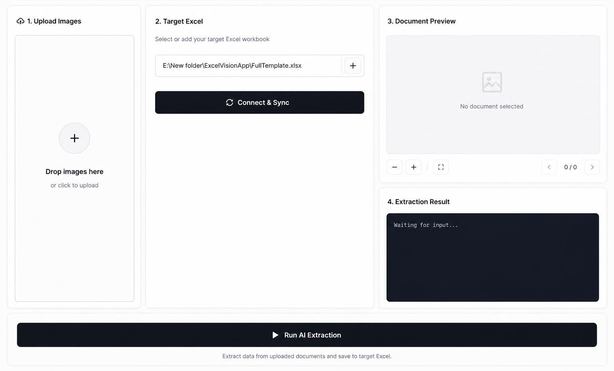

ChitraGuPT
An extraction agent that helps you build and sync data with Excel - powered by AI.
An extraction agent that helps you build and sync data with Excel - powered by AI.

Three simple steps to automated data entry.
Drag and drop any image, invoice, or screenshot into the secure vault or use Mobile-First capture.
Gemini 3.1 Flash Lite analyzes the context and extracts structured data intelligently.
Data is automatically appended to your target spreadsheet. No manual entry required.
"ChitraGuPT completely transformed my workflow. What used to take hours of manual data entry is now done instantly with incredible accuracy. The AI agent seamlessly integrates with my local Excel files - it's like magic."